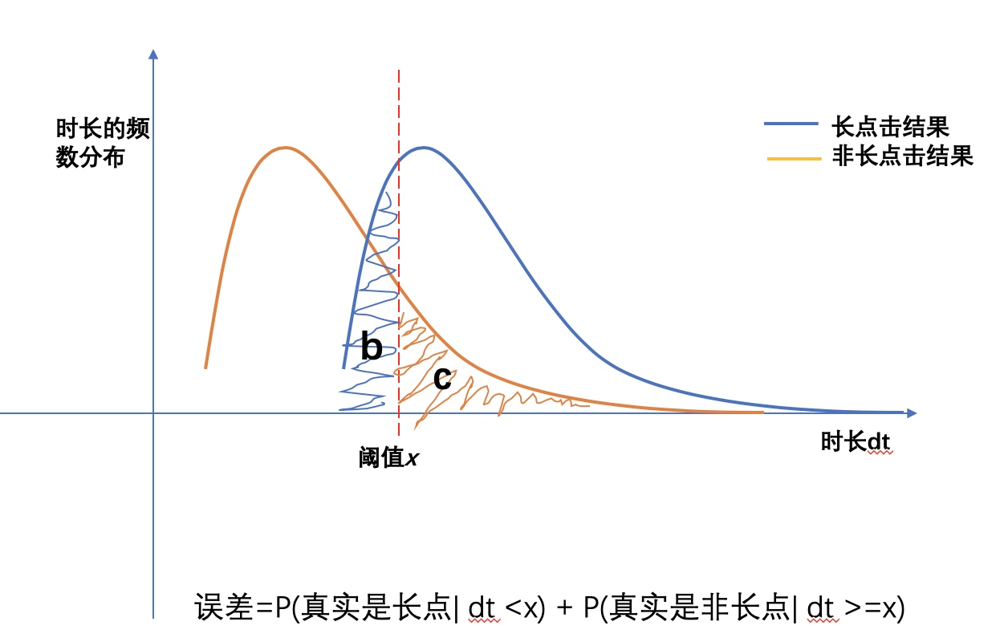

关于长点击阈值划分方法
用户停留时长一直是衡量用户在落地页满意度的一个重要度量指标。在具体业务设计的时候，可以去看时长分布的中位数、平均时长等统计级指标，亦有类似于衡量时长好坏的长点击率，长点击占比等指标。
首先来说下长点击，简单来说长点击即停留时长比较长的一个点击时间。
1. 长点击，满意点击，人工打分
我们说停留时间“比较长”，其实是一个相对概念，不同的资源类型可能划分的标准会不同。但是他们的出发点是一样的: 我们认为在特定资源类型下落地页时长越长，用户越倾向于满意。所以长点击本质上是用来刻画满意点击的。
(1) 无监督的划分
即我们不知道groundtruth，这个时候可以根据本身时长的分布，按照经验值比如60%，70%作为其长点击的分界点。这种划分方式 xxxx
(2) 有监督的
通过人工评估（比如qu相关性，qu的页面质量等维度），可以对qu结果进行人工打分，一般是0-4档。0，1代表不太好，2代表一般，3-4代表比较好。可以根据业务需求比如3-4认为是满意点击，2认为是一般点击，0-1认为是不满意点击。
以此人工标注来决定如何选择长点击划分阈值。
2. 如何划分长点击
长点击阈值划分的目标，即寻找如下决策函数的参数x
\[
F(t) = \left\{
\begin{array}{lr}
1，长点击 t \ge x & \\
0，非长点击 t< x\\
\end{array}
\right.
\]
从统计分布的角度看，即使是时长比较长的结果，人工打分也可能很低，时长很短的结果人工打分也可能是满意的。所以不管寻找到的最优参数\(x\)是多少，它都有可能会误分。而我们的目的是让这种因为误分而犯错的可能性尽可能的小。

从以上的分布图来说更直观一些，我们的误判损失即是图中阴影部分，很容易证明，移动阈值划分x时候，损失最小的是当两个分布曲线相交的点的时候。这指导我们可以按照如下的方法进行长点击划分：
执行步骤
Step0： 摸底时长分布
首先需要了解清楚数据本身的时长分布，根据时长的分布情况，大概划分不同的区间段。比如0-5，5-10，10-15，15-20，20-25，25-30，30-35，35-40， 40-50，50-60，60-100，>100这样进行划分。
同于频次分布较高的部分可以划分的细致一些，频次分布较低的部分可以划分的宽度较宽一些。
Step1： 抽样送评qu数据
确定送评样本，因为人工评估是需要成本的，我们不可能得到整体的good或者bad的分布曲线，我们所有的只是抽取的送评样本的标注数据。这就要求我们送评的数据对于总体一定要有好的代表性：
- 抽样分布应该和总体分布尽量一致
- 抽样量不能太小，否则样本估计总体的误差会比较大
如何确定最优送评样本量？（这个回来再写）
统计学的研究方法是要找到我们所关注变量的统计分布，我们最终是希望通过抽取得到的good和not_good的时长分布与整体差不多。
数据抽取：
- 考虑到数据抽取是基于qu粒度，一个qu其实会有多次用户点击行为，也就会有多个时长，可能波动较大。所以一般是取count(qu)>5的，并且时长取的是其中位数
预送评，一般先进行少量的预送评，比如送评1000个样本。返回会用来检验数据质量和划分的精细度
- check自己送评的数据中是否有一些异常数据。比如sf的url路径不完成
- check人工打分的质量程度
- 初步看下good和not_good的分布情况，大概确定长点的分布区间，从而看下送评的样本的时间段间隔精度是否需要调整
正式送评
Step2： 返回分析
根据good和not_good的频数分布，找到曲线的交点，即满足good(x) = not_good(x)的点，即可认为是长点击的分界点。短点击的划分类似，可以认为0-1的是短点击，或者更严格的0分的是短点击。 绘制bad和not_bad的频数分布，找到曲线交点。即满足bood(x) = not_bood(x)的点
- 实际操作：实际数据的分布图可能不如示意图那么明显，甚至有多个交点的情况。这时候可以计算图中b+c的面积，绘制(x,g(x))的曲线图，找到g(x)=0.5的点即可。 如果有多个可能是因为样本量不足够，或者本身指标数据不可信(前提假定是要研究的指标与人工打分是存在单调关系的)
3 应用-关于sigmoid函数的理解
AB实验
对于AB实验来说，有了长短点击时间阈值之后，可以直接计算长点击和短点击，更新指标评估即可。interleaving实验
对于interleaving来说，实际中是将dt经过一个映射(一般是sigmoid函数)将其转化为一个0-1的打分。
这里我们从另外一个角度来看这件事。LR或者说sigmoid函数能将一个负无穷到正无穷的数映射到0-1的一个概率值。是否是长点其实也是一个概率，当然这里时长t是取的(0, 正无穷)
假设
\[g(x) = \frac{good(x)}{good(x) + not\_good(x)}\]
其中 \(good(x)= \#good(t=x)\), \(not\_good(x)=\#not\_good(t= x)\)。
所以\(g(x)\)其实表示的是在\(t=x\)时候是长点击的概率。为了书写方便，
\[g(x) = \frac{1}{1+ not\_good(x)/good(x)}= \frac{1}{1+ e^{ln\frac{p}{1-p}}}\]
这里\(p(x)\)是表示当时间等于x时是长点击的概率。
从这个角度说，之前的sigmoid映射函数中\(\frac{1}{1+ e^{-a(x-b)}}\) 系数项即是log odds ratio。
因此只需对送评数据中\(ln\frac{p}{1-p}\)的分布数据去拟合一条曲线 \(\hat f(t)\)即可，最终的sigmoid映射函数就是
\[g(t) = \frac{1}{1+ e^{\hat f(t)}}\]
并且其中\(\hat f(t)=0\)的点恰巧就是长点击的分界点。
注意：实际送评的时候因为样本量的限制，不可能每一个分界点(在这里是每个停留时间dt)都会去送评，
4.其他:从模型准召的角度
其实从分类评估角度来看，
| not_good | Good | |
|---|---|---|
| F=0 | a | b |
| F=1 | c | d |
上面说的损失即阴影部分的面积=b+c, 所以其实从分类模型评估的角度，就是不一致率最小的时候的最优解,即
\[min b+c\]
- 准确&召回
分类模型中其实用的更多的是准确和召回指标，\(accurate=\frac{d}{c+d}\),\(recall = \frac{d}{b+d}\)
\[Max F\_score = 1-\frac{b+c}{b+c+2d}\]
这个标准下，和之前还是略微有些不同的
5.如何泛化
泛化问题主要是指：
- 业务层面
搜索，视频，以后其他的大小业务都可能面临这种问题。对于新的业务类型，人工送评应该是避免不了了。
- 时间层面变更
随着线上效果变更，当前调研的结果可能已经不再试用后续的结果。需要不断进行更新，比如视频铺量后，整体的时长分布和之前的可能变化很大。或者是需要拆解不同的维度类别
方案1：再次人工送评一遍，
方案2：进行时长分布映射
这种方案有个问题，相当于是按照top百分比进行划分的，认为top百分比所代表的满意度保持一致。可能整体时长都变长了，映射完后阈值也变长了，相对的满意度并没变。